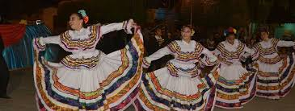

Festividades de Macará, Ecuador Las festividades de Macará, Ecuador son una muestra vibrante de la cultura y tradiciones de esta hermosa ciudad. A lo largo del año, Macará acoge numerosas celebraciones llenas de música, baile, gastronomía y alegría. A continuación, te presentamos una lista completa de las festividades más importantes de Macará, Ecuador: Carnaval de Macará (febrero) El Carnaval de Macará, Ecuador es una fiesta que no te puedes perder. Durante cuatro días, las calles se llenan de comparsas, carros alegóricos y música. Esta festividad es conocida por su alegría contagiosa y por la colorida batalla de agua y espuma que se lleva a cabo. Semana Santa (marzo/abril) La Semana Santa de Macará, Ecuador, es una celebración religiosa muy importante para los habitantes de la ciudad. Durante esta festividad, se realizan diferentes actividades como procesiones, misas y representaciones teatrales que recrean los últimos días de Jesús. Además, se podrá degustar deliciosos platos típicos de la región Fiestas de Macará (15 de julio) Las Fiestas de Macará, Ecuador, son una fecha especial para conmemorar la fundación de la ciudad. Durante estos días, se organizan eventos deportivos, conciertos, ferias artesanales y desfiles. También podrás disfrutar de la comida típica de la región y conocer más sobre su historia y tradiciones. Fiesta de la Virgen de las Mercedes (24 de septiembre) La Fiesta de la Virgen de las Mercedes es una de las festividades más importantes de Macará, Ecuador. Durante esta celebración religiosa, se realizan procesiones y actividades en honor a la virgen. Además, se lleva a cabo una feria popular donde podrás encontrar todo tipo de productos artesanales.
|  | macara | ir a home ir a sitio geografico ir a galeria ir a sitios turisticos